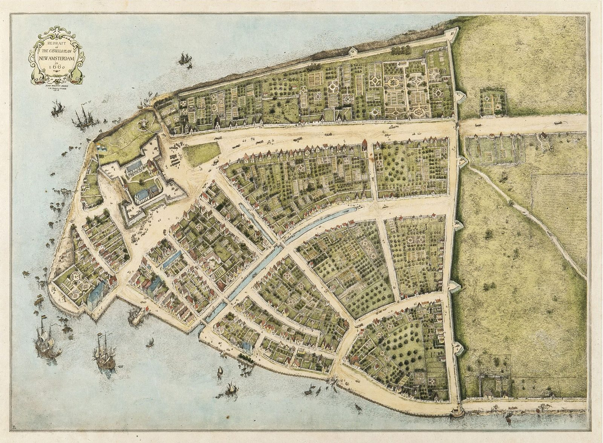

A family's four centuries in America — from New Amsterdam to the Pacific, one document at a time

This is the story of one family becoming American, read from the documents it left behind. It begins with a cooper from Winschoten who landed across the river from New Amsterdam around 1660 and married a girl born in the colony, and it follows their descendants — Croesen, Kroesen, Kroessen, Kreuso, Cruse, Krewson, a dozen spellings of one name — across the Kill to Staten Island, into Bucks County, Pennsylvania, on to Ohio and Iowa and the Pacific coast, and into the twentieth century's wars. Every chapter says which of its sentences rest on a document, which are inferred, and which are family legend.
19 chapters published so far · About the book and its sources
"Seems like the whole Krewson line all the way back to the 1600s had these problems with rifts over disagreements… but no one was talking about what they were."
Part I
1605 – 1709
New Amsterdam, Breuckelen, Staten Island. The colony changes hands twice around a family that never moves.
Part II
1709 – 1798
Bucks County, Pennsylvania. The surname becomes Krewson in a legal document. A family buys its freedom by instalment. The Revolution passes ten miles away.
Part III
1788 – 1935
The frontier chain: four generations, one photograph, and a century the record barely sees.
Part IV
1935 – 1971
Los Angeles, Tulsa, Dublin, Berlin, the North Atlantic, Vietnam.
Part V
1915 – today
Who wrote it down — and why a four-star general and a machinist's grandson ended up looking for the same cooper.